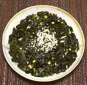

|
Seaweed Salad - BanchanKorea - Miyeok-muchim | ||||
| Makes: Effort: Sched: DoAhead: |
1 # * 40 min Yes |
This salad is one of the many "banchan" (tiny side dishes) served with Korean meals. It is very popular, particularly in the summer. Banchans are usually served in rather small portions, but this recipe would also serve as 4 or so regular salads. | |||
|
1-1/4 ------ 2 2 3 2-1/2 1 1/2 ------ |
oz --- cl T T t t --- |
Wakame (1) -- Dressing Scallion Garlic Soy Sauce Rice Vinegar Sugar Salt -- Garnish Sesame Seeds (2) |
Note: I have cut the amount of sugar to about half what a typical Korean recipe calls for. Make - (40 min - 10 min work)
|